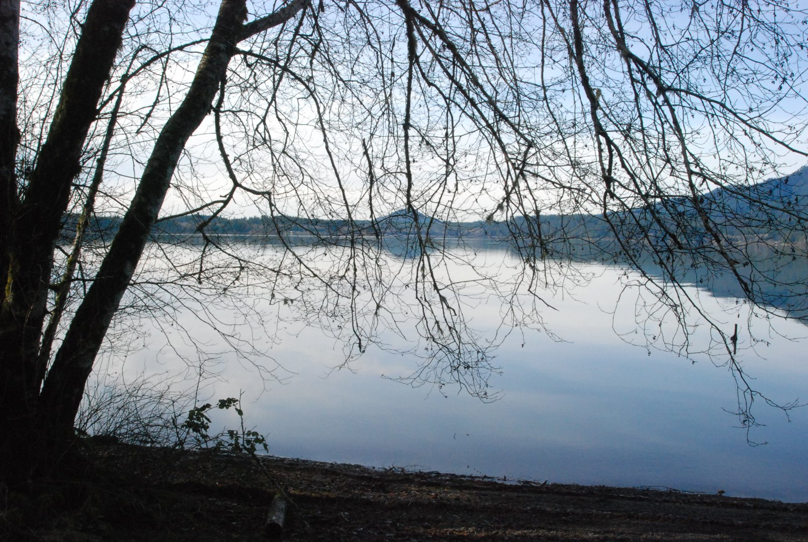

POINT 01 / 08
Sources & original points
Adapted from your archived Quinault ORB; primary sources checked September 7, 2026. Independent learning prototype; not an official Nation or NPS publication.
You’ve travelled the valley.
Revisit a connection or take it into the Orbiverse. The reverse-spiral memory review is planned for a later edition.